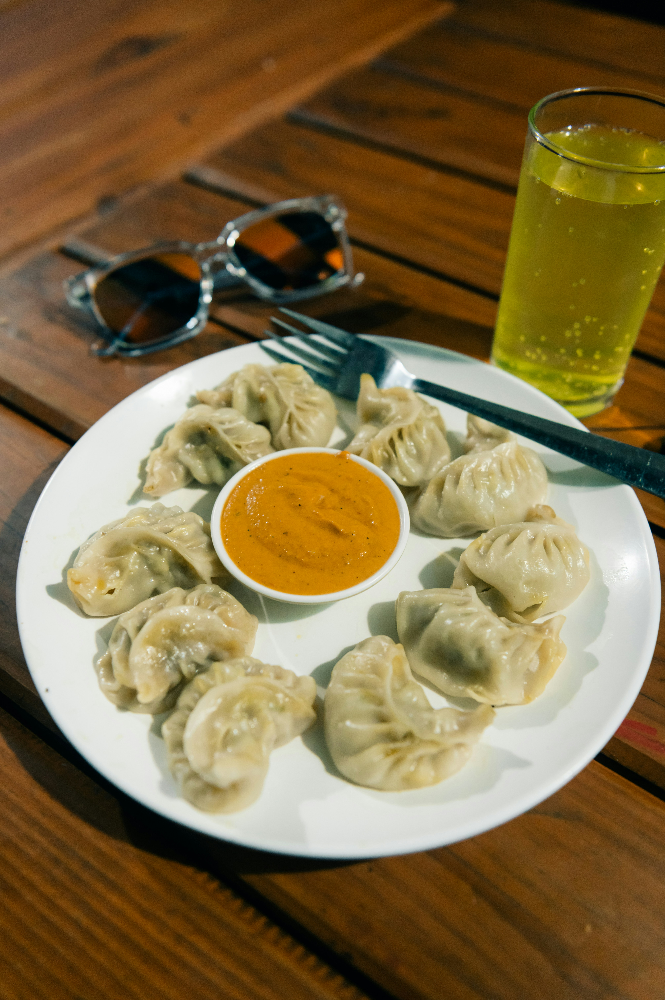

Chicken momos are one of the most loved street foods in Kolkata. Inspired by the famous dumplings of Darjeeling and the Himalayan region, these soft and flavorful dumplings are known for their thin wrappers and juicy chicken fillings. Every bite delivers the warmth and comfort that has made chicken momos a favorite across the city.
What sets chicken momos apart from other street foods is the quality of the filling. At Momo Heaven we use fresh chicken seasoned with ginger, garlic, and a blend of Himalayan spices. The filling is prepared daily to ensure every dumpling is as fresh and flavorful as possible.
At Momo Heaven we prepare fresh chicken momos every day using traditional Himalayan recipes. Our menu includes steamed chicken momos, crispy fried chicken momos, and spicy chicken momos served with flavorful chutney. Each variety offers a different experience — from the light and delicate steamed version to the bold and fiery spicy momos.
Chicken momos have become a staple snack in Kolkata and are enjoyed by people of all ages. Whether you are grabbing a quick bite after college or enjoying an evening snack with family, chicken momos from Momo Heaven are always a great choice. Visit us and taste the true flavor of Darjeeling style chicken dumplings right here in Kolkata.

Steamed Chicken Momos
Traditional Himalayan dumplings filled with seasoned chicken and gently steamed to perfection.

Fried Chicken Momos
Crispy dumplings with golden wrappers and juicy chicken filling inside.

Spicy Chicken Momos
Dumplings tossed in bold chili sauce with garlic and Himalayan spices.
Explore more Himalayan dumplings on the Momo Heaven homepage.